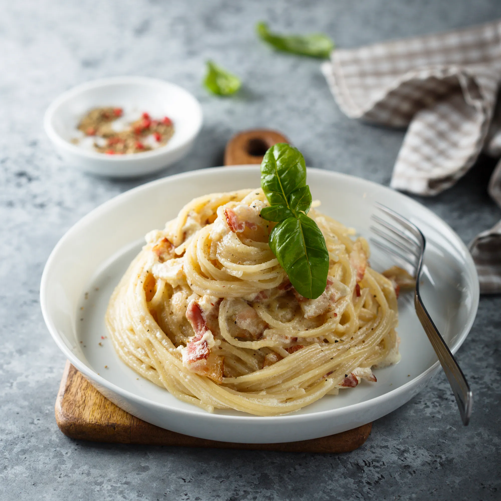

snelle carbonara pasta

ingredienten
- 500 g pasta
- 50 cl zure room
- 1 snuifje zout
- peper
- 250 g spek
- 1 ui
- 3 eigeel
bereiding
- Kook de pasta in ruim gezouten kokend water.
- Snipper de uien en fruit ze in de pan. Zodra ze goed bruin zijn, voeg je de spekblokjes toe.
- Bereid de verse room, eieren, zout en peper in een slakom en meng.
- Haal de bacon van het vuur zodra ze goudbruin zijn en voeg ze toe aan de room.
- Als de pasta al dente gaar is, giet je deze af en roer je de room erdoor. Zet terug op het vuur als het gerecht is afgekoeld.
- Serveer en geniet! Je kunt je gerecht ook versieren met champignons.